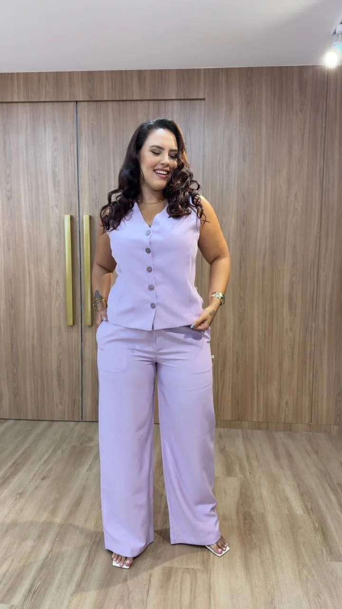
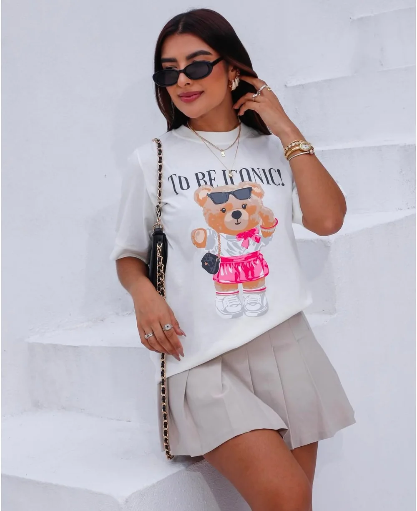
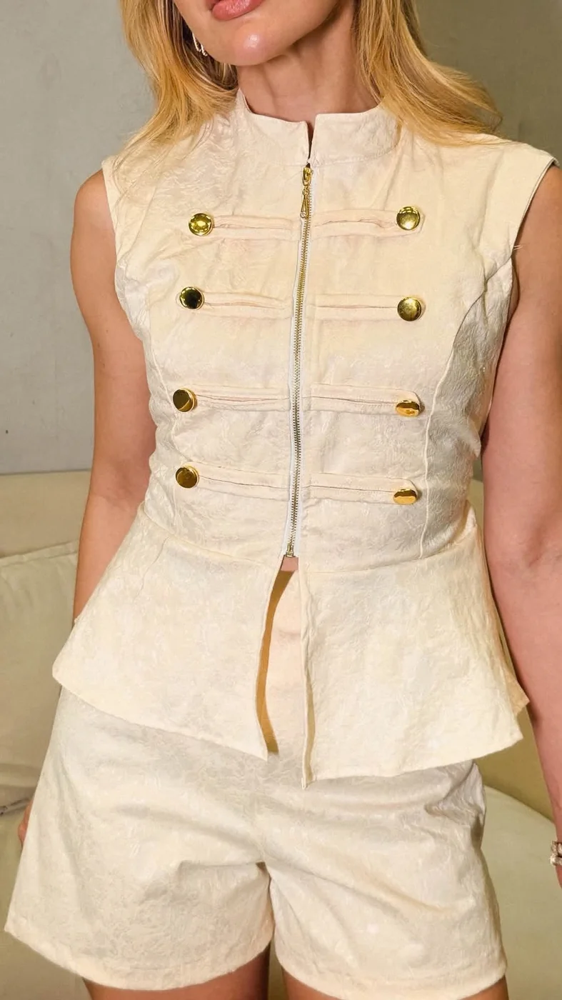
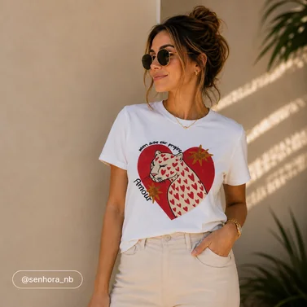
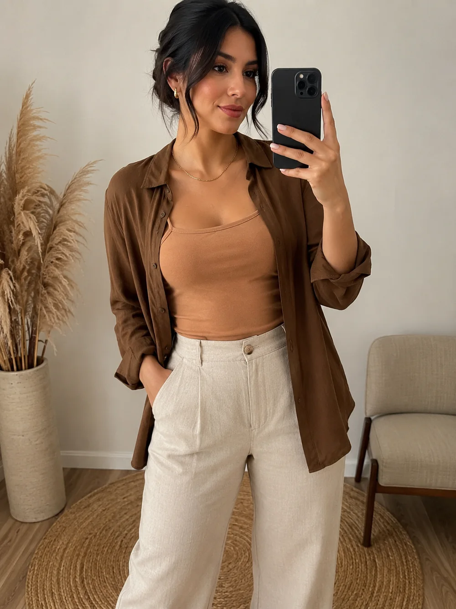
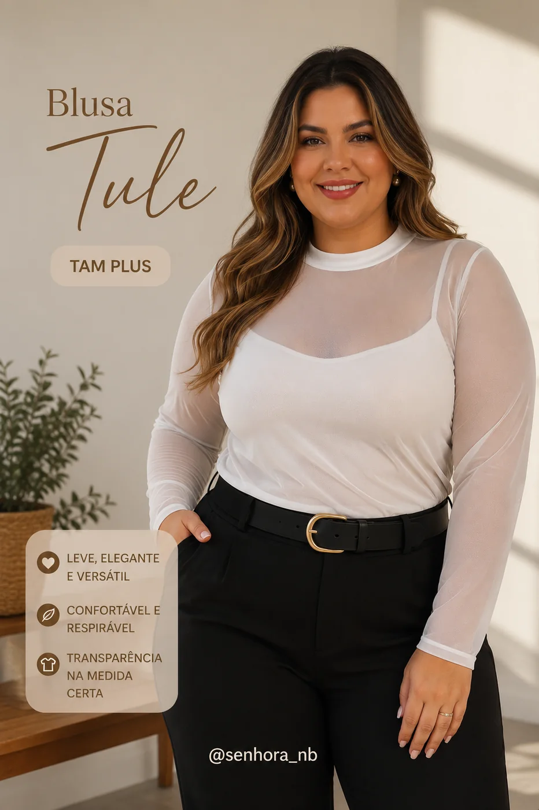

01
01TERCEIRA PEÇA
MODA FEMININA ATEMPORAL
Uma seleção visual de peças da Senhora NB para você explorar com calma. Consulte no WhatsApp os tamanhos, cores, valores e a disponibilidade atual.
ESCOLHA COM CALMA
Explore as referências do catálogo por categoria. Encontrou uma peça? Adicione à sua seleção e consulte tudo de uma vez pelo WhatsApp.
10 referências
01
02
03
04
05
06 08
08
09 10
10Não encontramos uma peça com esse termo.
Fotos e referências vieram do catálogo público da marca. Consulte valores, cores, tamanhos e disponibilidade atual diretamente com a Senhora NB.
SENHORA NB
Uma vitrine para conhecer as referências do catálogo em um só lugar e levar sua escolha para uma conversa direta com a marca.
Ver canais oficiaisSUA ESCOLHA, SUA CONVERSA
A seleção ajuda a organizar as peças que chamaram sua atenção. A equipe confirma os detalhes atualizados no atendimento.
Use a busca e os filtros para encontrar uma peça no catálogo visual.
Adicione as peças que quer consultar e revise antes de chamar.
Converse com a marca sobre tamanho, cor, valor e disponibilidade.
FICOU COM ALGUMA DÚVIDA?